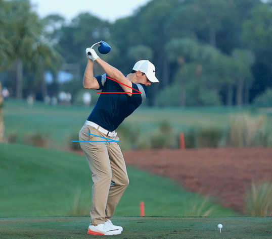
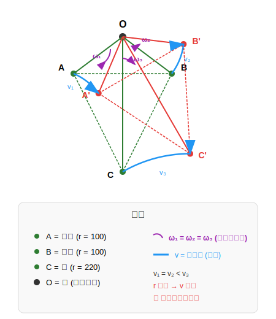
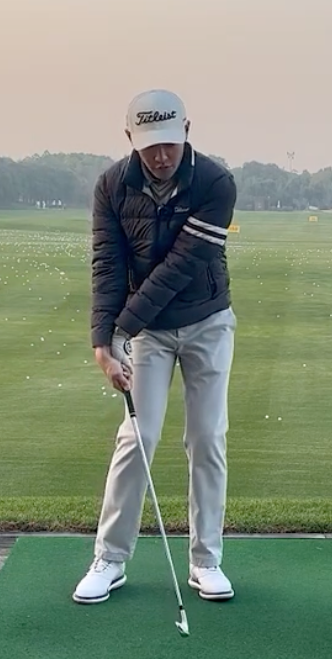
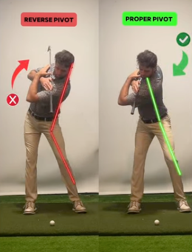

高尔夫生物力学入门 Golf Biomechanics 101¶
为什么学习这些？¶
想象两个高尔夫球手：
- 球手 A: 身高 185cm，体重 90kg，健身房常客
- 球手 B: 身高 170cm，体重 65kg，普通上班族
谁能把球打得更远？
答案可能出乎你意料：不一定是更强壮的那个。
高尔夫挥杆的力量不来自蛮力，而来自身体各部位协调运动产生的能量传递。职业球手能够将地面反作用力，通过骨盆、躯干、手臂、球杆，层层放大，最终在击球瞬间达到 180+ km/h 的杆头速度。
这份指南将带你理解这个过程的每一个环节。
第一章：身体机器¶
1.1 三大核心部位¶
高尔夫挥杆可以简化为三个关键身体部位的协调运动：
┌─────────────────────────────────────────────────────────────────────────────┐
│ 身体分段示意图 │
├─────────────────────────────────────────────────────────────────────────────┤
│ │
│ ┌─────────┐ │
│ │ HEAD │ 头部（保持稳定） │
│ └────┬────┘ │
│ │ │
│ ┌────────┴────────┐ │
│ │ THORAX │ 胸腔/上躯干 │
│ │ (Shoulders) │ ← 主要旋转单元 │
│ └────────┬────────┘ │
│ │ │
│ ┌────────┴────────┐ │
│ │ CORE │ 核心肌群 │
│ │ (Obliques) │ ← 连接上下身 │
│ └────────┬────────┘ │
│ │ │
│ ┌────────┴────────┐ │
│ │ PELVIS │ 骨盆 │
│ │ (Hips) │ ← 力量发动机 │
│ └────────┬────────┘ │
│ │ │
│ ┌────────┴────────┐ │
│ │ LEGS │ 双腿 │
│ │ (Ground) │ ← 地面反作用力来源 │
│ └─────────────────┘ │
│ │
└─────────────────────────────────────────────────────────────────────────────┘
骨盆 Pelvis¶
定义: 髋骨结构，连接躯干与下肢
中文解释: 就是你的"胯"，包括左右两侧的髋关节。站立时，骨盆是整个上半身的"底座"。
在挥杆中的作用:
- 下杆的第一启动者（First Mover）
- 力量从地面向上传递的中转站
- 职业球手骨盆旋转速度可达 477°/s
胸腔 Thorax¶
定义: 从肩部到中背的上躯干区域
中文解释: 简单说就是"上半身"，包括胸部、肩膀、上背。当我们说"转肩"时，其实是整个胸腔在旋转。
在挥杆中的作用:
- 挥杆的主要旋转单元
- 上杆时向后旋转储存能量
- 下杆时释放能量，速度可达 552°/s
核心肌群 Core¶
定义: 腹部和下背的肌肉群，包括腹斜肌、腹直肌、竖脊肌
中文解释: 连接上下身的"桥梁"。核心不只是"腹肌"，还包括侧腹和下背的深层稳定肌。
在挥杆中的作用:
- 连接骨盆和胸腔的旋转
- 传递下肢产生的力量到上肢
- 稳定脊柱，防止受伤
1.2 动力链 The Kinetic Chain¶
这是本文档最重要的概念之一。
动力链 (Kinetic Chain) 是指身体各部位按顺序连接，将能量从近端（身体中心）传递到远端（四肢末端）的系统。
┌─────────────────────────────────────────────────────────────────────────────┐
│ 动力链能量传递 │
├─────────────────────────────────────────────────────────────────────────────┤
│ │
│ 地面 → 双腿 → 骨盆 → 躯干 → 手臂 → 球杆 → 球 │
│ │
│ Ground → Legs → Pelvis → Thorax → Arms → Club → Ball │
│ │
│ ════════════════════════════════════════════════════════════════ │
│ 能量方向：从中心向外，从下向上 │
│ 速度变化：每个环节速度递增约 1.5 倍 │
│ ════════════════════════════════════════════════════════════════ │
│ │
│ 示例速度递增： │
│ 骨盆 477°/s → 躯干 552°/s → 手臂 1200°/s → 球杆 2500°/s │
│ │
└─────────────────────────────────────────────────────────────────────────────┘
为什么动力链如此重要？
想象你在甩一条鞭子：
- 你的手臂先动（近端）
- 鞭身跟着动
- 鞭梢最后动，但速度最快（远端）
高尔夫挥杆的原理完全相同。如果你用手臂直接甩球杆（跳过身体旋转），就像只用手腕甩鞭子——永远达不到最大速度。
正确的动力链 = 每个环节按顺序启动，前一个环节减速时，能量传递给下一个环节
错误的动力链 = 手臂先于身体启动，或多个部位同时启动
1.3 挥杆的八个阶段 The Eight Swing Phases¶
一个完整的高尔夫挥杆可以分为八个阶段：
P1-P10 与八阶段的关系
高尔夫教学中常用两套分类体系：
- P Classification System (P1-P10): 位置导向，定义 10 个关键几何检查点
- 八阶段系统: 时间导向，描述 8 个连续运动阶段
两套系统本质上描述同一个挥杆动作，只是视角不同。P 系统有 10 个位置而八阶段只有 8 个的原因是：
- P3 (上杆中点) 是 Phase 3 上杆阶段内的一个检查点
- P6 (下杆中点) 是 Phase 6 下杆阶段内的一个检查点
- P8、P9、P10 都在 Phase 8 收杆阶段内，细分了收杆动作
┌─────────────────────────────────────────────────────────────────────────────────────────────────────┐
│ 挥杆八阶段时间线 │
├─────────────────────────────────────────────────────────────────────────────────────────────────────┤
│ │
│ 时间轴 (职业球手 Driver，总时长 ~1.3s) │
│ ────────────────────────────────────────────────────────────────────────────────────────────── │
│ 0s 0.15s 0.85s 0.95s 1.10s 1.35s │
│ │ │ │ │ │ │ │
│ ▼ ▼ ▼ ▼ ▼ ▼ │
│ │
│ ┌────┐ ┌─────┐ ┌─────────────────────┐ ┌────┐ ┌─────┐ ┌─────────┐ ┌──────┐ ┌────────────────┐ │
│ │ 1 │→│ 2 │→│ 3 │→│ 4 │→│ 5 │→│ 6 │→│ 7 │→│ 8 │ │
│ │准备 │ │起杆 │ │ 上 杆 │ │顶点 │ │转换 │ │ 下 杆 │ │ 击球 │ │ 收 杆 │ │
│ └────┘ └─────┘ └─────────────────────┘ └────┘ └─────┘ └─────────┘ └──────┘ └────────────────┘ │
│ │
│ 静态 0.15s 0.70s 瞬间 0.10s 0.15s ~5ms 0.25s
│ │
│ ◀───────────── 上杆 ~0.85s ───────────▶◀────────── 下杆 ~0.25s ──────▶ │
│ │
│ ⚠️ 转换期是最关键的阶段 │
│ │
└─────────────────────────────────────────────────────────────────────────────────────────────────────┘
各阶段详解（P 系统 + 八阶段合并）¶
| 阶段 | P 位置 | 英文 | 时长 | 位置定义 | 关键动作 |
|---|---|---|---|---|---|
| 1 | P1 | Address | 静态 | 准备站姿 | 握杆、站位、身体姿势 |
| 2 | P2 | Takeaway | ~0.15s | 杆身平行地面 | 球杆离开球位，三角形保持完整 |
| 3 | P3 | Backswing | ~0.70s | 引导臂平行地面 | 上杆中点，开始上腕 (wrist hinge) |
| 4 | P4 | Top | 瞬间 | 上杆顶点 | 充分转肩，理想腕位，杆身平行 |
| 5 | P5 | Transition | ~0.10s | 引导臂下杆平行 | ⚠️ 最关键：下盘先动，手腕开始回正 |
| 6 | P6 | Downswing | ~0.15s | 杆身下杆平行 | 延迟释放 (lag)，躯干旋转加速 |
| 7 | P7 | Impact | ~5ms | 触球瞬间 | 杆面方正，重心前移，手在球前 |
| 8 | P8 | Follow-through | ~0.25s | 杆身送杆平行 | 手臂完全伸展，后手腕翻转 |
| 8 | P9 | Follow-through | ↑ | 引导臂送杆平行 | 收杆中点，保持平衡 |
| 8 | P10 | Finish | ↑ | 收杆完成 | 完全转体，重心前移，杆在肩上 |
阅读指南
- 粗体 P 位置 (P1, P2, P4, P7, P10) = 与八阶段一一对应的关键位置
- 普通 P 位置 (P3, P5, P6, P8, P9) = 阶段内的检查点
- P8、P9、P10 都属于 Phase 8 收杆阶段，时长共享 ~0.25s
1.4 节奏比 Tempo Ratio¶
职业球手的节奏比通常为 3:1：
这意味着上杆用时是下杆的 3 倍。这个比例出奇地一致，无论是 Tiger Woods 还是 Rory McIlroy。
关键认知
节奏比是诊断工具，不是训练目标。每个人有自己的自然节奏，关键是保持一致。详见 高尔夫术语表 - 节奏比。
1.5 引导侧与后侧 Lead Side & Trail Side¶
高尔夫中不说"左右"，而是说"引导侧"和"后侧"：
| 术语 | 右手球员 | 左手球员 | 作用 |
|---|---|---|---|
| 引导侧 Lead Side | 左侧 | 右侧 | 面向目标，承受击球冲击 |
| 后侧 Trail Side | 右侧 | 左侧 | 背向目标，提供旋转动力 |
这种命名方式避免了左右手球员的混淆。
对传感器项目的意义
- IMU 命名规范：传感器位置应使用 lead/trail 而非 left/right
- 算法复用：动作分析只需一套逻辑，通过配置切换左右手模式
- 数据通用性：标注和指标报告对两种球员通用，无需维护两套术语
详见 高尔夫术语表 - 引导侧与后侧。
第二章：旋转的故事¶
2.1 两种关键旋转¶
高尔夫挥杆的力量主要来自两种旋转：
Shoulder Turn (Torso Turn) 肩部旋转角度¶
定义: 胸腔绕垂直轴的旋转角度
解释: 就是"转肩"。想象你的肩膀连线是一个指南针，上杆时这个指南针转了多少度。
职业标准:
- 上杆顶点：90-110°（相对于准备站姿）
- 业余球手通常只有 70-85°
Hip Turn (Pelvis Turn) 髋部旋转角度¶
定义: 骨盆绕垂直轴的旋转角度
解释: 就是"转胯"。髋部旋转幅度通常比肩部小，因为下半身要保持稳定。
职业标准:
- 上杆顶点：45-55°
- 业余球手通常有 30-40°
2.2 X-Factor 肩髋分离角¶
这是高尔夫生物力学中最重要的概念之一。
什么是 X-Factor？¶
X-Factor = 肩部旋转角度 − 髋部旋转角度

为什么 X-Factor 重要？¶
X-Factor 代表了你在上杆顶点时躯干被"拧紧"的程度。
想象一条拧紧的毛巾：
- 上半身向后转（肩膀）
- 下半身相对固定（髋部）
- 中间的核心肌群被拉伸储能
当你释放时（下杆），这些被拉伸的肌肉会弹性回缩，产生巨大的旋转力量。
X-Factor 基准值¶
| 水平 | X-Factor | 解读 |
|---|---|---|
| 初学者 | <25° | 身体旋转不足，主要靠手臂 |
| 业余 | 25-35° | 有一定分离，但还有提升空间 |
| 进阶 | 35-45° | 良好的肩髋分离 |
| 职业 | 42-55° | 最佳范围，力量与控制平衡 |
| 过度 | >60° | 可能导致下背受伤 |
研究发现: X-Factor 与杆头速度的相关系数 r = 0.90（极强相关）
2.3 X-Factor Stretch¶
这是区分职业与业余球手的关键指标之一。详见 高尔夫术语表 - X-Factor Stretch。
什么是 X-Factor Stretch？¶
在转换期（Transition）：
- 骨盆已经开始向目标方向旋转（下杆启动）
- 但肩膀还在完成上杆（继续向后转或保持不动）
- 这导致 X-Factor 进一步增加
简单理解：骨盆先动，肩膀后动——这个时间差造成了额外的"拧紧"。
┌─────────────────────────────────────────────────────────────────────────────┐
│ X-Factor Stretch 时间线 │
├─────────────────────────────────────────────────────────────────────────────┤
│ │
│ X-Factor │
│ ↑ │
│ 55°│ ●←── X-Factor Stretch 峰值 │
│ │ / \ │
│ 45°│ ●─────● \ │
│ │ / Top \ │
│ │ / \ │
│ 35°│ / \ │
│ │ / \ │
│ │ / \ │
│ 0°│──────●─────────────────────● │
│ └──────┼─────────┼───────────┼────────→ 时间 │
│ Address Top Transition Impact │
│ │
│ │
└─────────────────────────────────────────────────────────────────────────────┘
X-Factor Stretch = 转换期 X-Factor 的增量
X-Factor vs X-Factor Stretch
| 概念 | 定义 | 类型 |
|---|---|---|
| X-Factor | 肩膀旋转角度 − 髋部旋转角度 | 瞬时值（某一时刻的角度差） |
| X-Factor Stretch | 转换期 X-Factor − 顶点 X-Factor | 变化量（两个时刻的差值） |
数字例子：
时刻 肩膀旋转 髋部旋转 X-Factor
──────────────────────────────────────────────────
上杆顶点 (Top) 90° 45° 45° ← X-Factor at Top
转换期峰值 92° 37° 55° ← X-Factor 峰值
肩膀旋转 − 髋部旋转 = 45°
- X-Factor Stretch = 转换期峰值 − 顶点值 =
55° − 45° = 10°
| X-Factor 旋转角度 | X-Factor Stretch |
|---|---|
|
 |
X-Factor Stretch 基准值¶
| 水平 | X-Factor Stretch | 解读 |
|---|---|---|
| 初学者 | <3° 或无 | 没有"蓄力"动作 |
| 业余 | 3-6° | 有一些伸展，但不明显 |
| 进阶 | 6-10° | 良好的转换期动作 |
| 职业 | 8-15° | 明显的肩髋分离增量 |
2.4 S-Factor 和 O-Factor 倾斜角度¶
除了水平旋转，还有倾斜角度需要关注：
S-Factor (肩部倾斜角度)¶
定义: 肩部连线相对于水平面的倾斜角度（侧弯）
解释: 上杆时，后侧肩膀会比引导侧肩膀低；下杆到击球时，情况相反。
可视化参考
📊 GEARS: Body Metrics 解释了 Side Bend (侧弯) 的 3D 定义，与 S-Factor 概念相同。
O-Factor (骨盆倾斜角度)¶
定义: 骨盆相对于水平面的倾斜角度
解释: 骨盆倾斜应该保持相对稳定（5-10°），过大的变化会影响稳定性。
倾斜角度基准值¶
| 指标 | 上杆顶点 | 击球瞬间 | 注意事项 |
|---|---|---|---|
| S-Factor | 30-40° 右倾 | 25-35° 左倾 | 倾斜方向在击球前反转 |
| O-Factor | 5-10° | 5-10° | 应保持稳定 |
-

上杆顶点
-

击球瞬间
-

收杆中段
-

收杆完成
红色线 = S-Factor（肩部倾斜），蓝色线 = O-Factor（骨盆倾斜）。注意蓝色线（O-Factor）在整个挥杆过程中保持相对稳定。
2.5 旋转指标总结¶
┌─────────────────────────────────────────────────────────────────────────────┐
│ 旋转指标速查表 │
├─────────────────────────────────────────────────────────────────────────────┤
│ │
│ 指标 公式 职业标准 │
│ ───────────────────────────────────────────────────────────────────────── │
│ 肩部旋转角度 胸腔绕垂直轴角度 90-110° │
│ 髋部旋转角度 骨盆绕垂直轴角度 45-55° │
│ X-Factor 肩部旋转 - 髋部旋转 42-55° │
│ X-Factor Stretch 转换期XF - 顶点XF 8-15° │
│ S-Factor 肩部侧倾角度 30-40° → 25-35° │
│ O-Factor 骨盆侧倾角度 5-10° (稳定) │
│ │
└─────────────────────────────────────────────────────────────────────────────┘
第三章：时机的秘密¶
3.1 为什么时机比力量更重要？¶
一个惊人的事实：
职业球手与业余球手的肌肉力量差距约 15-20% 但杆头速度差距可达 30-40%
这个差距从何而来？时机 (Timing)。
正确的时机可以让能量层层放大；错误的时机会导致能量提前泄漏。
3.2 运动链顺序 Kinematic Sequence¶
这是本章的核心概念。
运动链顺序 (Kinematic Sequence) 描述了下杆时各身体部位加速和减速的顺序：
┌─────────────────────────────────────────────────────────────────┐
│ Kinematic Sequence 时间线 │
├─────────────────────────────────────────────────────────────────┤
│ │
│ 角速度峰值 ① ② ③ ④ │
│ 到达顺序: 骨盆 → 躯干 → 手臂 → 球杆 │
│ ↓ ↓ ↓ ↓ │
│ 时间轴: ───●────────●────────●────────●───→ Impact │
│ 先减速 承接能量 承接能量 最后爆发 │
│ │
│ 能量传递: 骨盆减速 → 躯干获得能量 → 加速 │
│ 躯干减速 → 手臂获得能量 → 加速 │
│ 手臂减速 → 球杆获得能量 → 加速（峰值最高） │
│ │
└─────────────────────────────────────────────────────────────────┘
可视化参考
📊 GEARS: Kinematic Sequence 展示了真实的 4 条曲线图。
近端到远端原则 Proximal-to-Distal¶
这是生物力学的基本原理：能量从身体中心（近端）流向四肢末端（远端）。
- 近端 Proximal: 靠近身体中心（骨盆、躯干）
- 远端 Distal: 远离身体中心（手臂、球杆）
正确顺序：骨盆 → 躯干 → 手臂 → 球杆
3.3 转换期：魔法发生的时刻¶
转换期 (Transition) 是下杆开始的前 50-100 毫秒，也是整个挥杆中最关键的时刻。
转换期发生了什么？¶
┌─────────────────────────────────────────────────────────────────┐
│ 转换期 Transition (50-100ms) │
├─────────────────────────────────────────────────────────────────┤
│ │
│ 这是整个挥杆最关键的瞬间，发生了"反直觉"的事： │
│ │
│ 骨盆 │ 肩膀 │
│ ───────────────────────────────── │
│ 已经开始 │ 还在向后转 │
向目标转 → │ ← 或保持不动 │
│ │
│ ↑ 这个"反向运动"产生了 X-Factor Stretch │
│ │
│ 时序：骨盆先动 (0ms) → 躯干跟上 (~40ms) → 手臂跟上 (~80ms) │
│ │
└─────────────────────────────────────────────────────────────────┘
转换期的重要性¶
在这短短 50-100ms 内：
- 骨盆领先：下半身开始向目标转动
- 肩膀滞后：上半身还在完成上杆或保持不动
- X-Factor 增加：肩髋分离进一步拉大
- 能量储存：核心肌群被最大程度拉伸
职业球手能够在转换期让骨盆领先肩膀 30-50ms；业余球手通常做不到这一点。
3.4 峰值时机(Peak Timing)和峰值间隔(Time Between Peaks, TBP)¶
每个身体部位都有一个角速度峰值，这些峰值的时机必须按顺序排列。
各部位峰值时机 (以转换期开始为 0ms)¶
| 身体部位 | 达峰时间 | 峰值速度 | 与前一环节间隔 |
|---|---|---|---|
| 骨盆 Pelvis | 50-70ms | 477°/s (职业) | - (第一个) |
| 躯干 Thorax | 70-90ms | 552°/s (职业) | 20-30ms |
| 手臂 Arms | 100-120ms | 1200°/s | 20-30ms |
| 球杆 Club | 130-150ms | 2500°/s | 20-30ms |
峰值间隔¶
TBP 是相邻两个部位达到峰值的时间差。
最佳范围: 20-50ms
- <10ms: 间隔太小，能量传递不充分（"同步"错误）
- >60ms: 间隔太大，能量泄漏（"延迟"错误）
3.5 肌肉激活与运动链¶
关键理解：肌肉激活是因，峰值角速度是果。
肌肉激活顺序 vs 峰值角速度顺序¶
| 顺序 | 肌肉激活（EMG 测量） | 对应峰值（IMU 测量） | 时间差 |
|---|---|---|---|
| 1️⃣ | 核心肌群激活 | 骨盆峰值角速度 | 激活先于峰值 ~30-50ms |
| 2️⃣ | 腹斜肌激活 | 躯干峰值角速度 | 激活先于峰值 ~30-50ms |
| 3️⃣ | 前臂肌群激活 | 手臂峰值角速度 | 激活先于峰值 ~20-30ms |
正确模式：
肌肉激活间隔 vs 峰值间隔 (TBP)¶
| 指标 | 定义 | 最佳范围 |
|---|---|---|
| 肌肉激活间隔 | 相邻肌群开始激活的时间差 | 30-60ms |
| 峰值间隔 (TBP) | 相邻部位达到峰值的时间差 | 20-50ms |
关系：肌肉激活间隔略大于峰值间隔，因为激活到达峰需要时间。
3.6 常见时机错误与 EMG 诊断¶
IMU + EMG 联合诊断
IMU 发现"什么问题"，EMG 解释"为什么出问题"
错误 1：顺序颠倒 Sequence Reversal¶
问题: 手臂在骨盆之前达到峰值速度
| 检测方式 | 表现 |
|---|---|
| IMU | 手臂 → 躯干 → 骨盆 (完全颠倒) |
| EMG | 前臂先激活 → 核心后激活 |
错误 2：同步达峰 Simultaneous Peaks¶
问题: 两个或多个部位同时达到峰值
| 检测方式 | 表现 |
|---|---|
| IMU | 骨盆 ≈ 躯干同时达峰 (TBP < 10ms) |
| EMG | 核心和腹斜肌几乎同时激活 |
错误 3：延迟传递 Delayed Transfer¶
问题: 各部位达峰间隔过大 (>60ms)
| 检测方式 | 表现 |
|---|---|
| IMU | 骨盆达峰后 80ms 躯干才达峰 (TBP > 60ms) |
| EMG | 核心激活后 100ms 腹斜肌才激活 |
错误 4：双峰 Double Peak¶
问题: 某个部位的速度曲线出现两个峰值
| 检测方式 | 表现 |
|---|---|
| IMU | 骨盆速度先升后降，再升再降 |
| EMG | 肌肉激活出现两次峰值 |
EMG 诊断决策树¶
┌─────────────────────────────────────────────────────────┐
│ 诊断决策树 │
├─────────────────────────────────────────────────────────┤
│ │
│ IMU 检测到峰值顺序错误？ │
│ ↓ │
│ 是 → EMG 检查激活顺序 → 找到根本原因 │
│ │
│ IMU 检测到 TBP 异常？ │
│ ↓ │
│ 是 → EMG 检查激活间隔 → 确定是启动问题还是衔接问题 │
│ │
│ EMG 的价值：从"发现问题"到"解释问题" │
└─────────────────────────────────────────────────────────┘
3.7 职业 vs 业余：时机对比¶
┌─────────────────────────────────────────────────────────────────┐
│ 职业 vs 业余 运动链对比 │
├─────────────────────────────────────────────────────────────────┤
│ │
│ 【职业球手】75% 呈现正确模式 │
│ │
│ 达峰顺序: ① 骨盆 → ② 躯干 → ③ 手臂 → ④ 球杆 │
│ 时间间隔: ~40ms ~40ms ~20ms │
│ 特点: 清晰的"阶梯式"传递，每段减速时下一段加速 │
│ │
│ ════════════════════════════════════════════════════════════ │
│ │
│ 【业余球手】常见错误模式 │
│ │
│ 错误 A: ① 骨盆 → ②③ 躯干+手臂同时 → ④ 球杆 │
│ （躯干和手臂"一起动"，能量传递断裂） │
│ │
│ 错误 B: ②① 躯干先于骨盆 → ③ 手臂 → ④ 球杆 │
│ （"上身主导"，俗称 over the top） │
│ │
│ 错误 C: ①②③④ 几乎同时达峰 │
│ （没有顺序，"用手打球"） │
│ │
└─────────────────────────────────────────────────────────────────┘
| 对比维度 | 职业球手 | 业余球手 |
|---|---|---|
| 顺序正确率 | 89% | ~50% |
| 骨盆峰值速度 | 477°/s | 395°/s |
| 峰值间隔 TBP | 20-40ms | <10ms 或 >60ms |
| 杆头速度 | 110-125 mph | 85-95 mph |
第四章：速度传递 Speed Transfer¶
4.1 什么是角速度？¶
角速度 (Angular Velocity) = 旋转的快慢，单位是 度/秒 (°/s)
公式¶
- ω (omega)：角速度
- Δθ：转过的角度
- Δt：所用时间
简单类比：
一个每秒转 360° 的物体 = 每秒转一圈
角速度与线速度的关系¶

上图展示了身体绕 O 点（头/脊柱）旋转时，各部位的运动关系：
- A（右肩）、B（左肩）、C（手） 都绕 O 点旋转
- 旋转角度 θ = 30°（所有点相同）
- 蓝色弧线 = 各点移动的距离（弧长）
关键公式：
核心结论：
| 部位 | 到 O 的距离 (r) | 角速度 (ω) | 线速度 (v) |
|---|---|---|---|
| 肩膀 (A, B) | 小 | 相同 | 小 |
| 手 (C) | 大 | 相同 | 大 |
| 杆头 | 最大 | 相同 | 最大 |
4.2 速度递增规律¶
高尔夫挥杆的一个神奇特性：每个环节的峰值角速度都比前一个环节快。
┌─────────────────────────────────────────────────────────────────────────────┐
│ 速度递增级联 │
├─────────────────────────────────────────────────────────────────────────────┤
│ │
│ 角速度 (°/s) │
│ │
│ 2500 │ ████ 球杆 │
│ │ ████ │
│ 2000 │ ████ │
│ │ ████ │
│ 1500 │ ████ │
│ │ ████ ████ │
│ 1200 │ ████ ████ 手臂 │
│ │ ████ ████ │
│ 800 │ ████ ████ ████ │
│ │ ████ ████ ████ │
│ 552 │ ████ ████ ████ ████ 躯干 │
│ 477 │ ████ ████ ████ ████ ████ 骨盆 │
│ │ ████ ████ ████ ████ ████ │
│ 0 │────────────────────────────────────────────────────── │
│ 骨盆 躯干 手臂 球杆 │
│ │
│ 递增倍数：1.0x → 1.15x → 2.2x → 2.1x │
│ 累计倍数：1.0x → 1.15x → 2.5x → 5.2x │
│ │
└─────────────────────────────────────────────────────────────────────────────┘
1.5x 递增规则¶
一个简化的经验法则：每个环节速度约为前一个环节的 1.5 倍
实际数据：
| 环节 | 职业峰值 | 与骨盆比值 | 与前一环节比值 |
|---|---|---|---|
| 骨盆 | 477°/s | 1.00x | - |
| 躯干 | 552°/s | 1.16x | 1.16x |
| 手臂 | 1200°/s | 2.52x | 2.17x |
| 球杆 | 2500°/s | 5.24x | 2.08x |
从骨盆到球杆，速度放大了 5 倍以上！
4.2 各部位速度基准¶
骨盆旋转速度¶
| 水平 | 峰值角速度 | 杆头速度相关性 |
|---|---|---|
| 初学者 | <350°/s | 差 |
| 业余 | 350-450°/s | 中 |
| 进阶 | 450-550°/s | 良 |
| 职业 | 477-550°/s | 优 |
研究数据: 职业平均 477±53°/s，业余平均 395±53°/s，差距 82°/s (17%)
躯干旋转速度¶
| 水平 | 峰值角速度 | 说明 |
|---|---|---|
| 业余 | 430±50°/s | 约为职业的 78% |
| 职业 | 552±48°/s | 基准值 |
手臂旋转速度¶
| 水平 | 峰值角速度 | 说明 |
|---|---|---|
| 业余 | 800-1000°/s | 差距较大 |
| 职业 | 1200-1500°/s | 基准值 |
杆头速度 (线速度)¶
杆头速度是最终输出，通常用 mph 或 km/h 表示。详见 高尔夫术语表 - 杆头速度。
| 球杆 | 职业 | 业余 | 差距 |
|---|---|---|---|
| Driver | 113 mph (182 km/h) | 93 mph (150 km/h) | -18% |
| 7-Iron | 90 mph (145 km/h) | 75 mph (121 km/h) | -17% |
| PW | 85 mph (137 km/h) | 70 mph (113 km/h) | -18% |
4.4 各因素与杆头速度的相关性¶
来自 Meister et al. (2011) 的研究结果：
| 指标 | 中文 | 与杆头速度相关性 (r) | 强度 |
|---|---|---|---|
| Peak Free Moment | 峰值自由力矩 | 0.943 | 极强 |
| X-Factor at Impact | 击球时 X-Factor | 0.943 | 极强 |
| Peak X-Factor | 峰值 X-Factor | 0.900 | 极强 |
| Peak Thorax Rotation | 峰值躯干旋转 | 0.900 | 极强 |
| Peak Pelvis Rotation | 峰值骨盆旋转 | 0.850 | 强 |
| Kinematic Sequence | 运动链顺序 | +15-25% | 极强 |
关键发现: 运动链顺序正确可以提升 15-25% 杆头速度（相当于 10-15 mph）
4.5 启示¶
基于上述数据，提升杆头速度的优先级：
┌─────────────────────────────────────────────────────────────────────────────┐
│ 杆头速度提升优先级 │
├─────────────────────────────────────────────────────────────────────────────┤
│ │
│ 1️⃣ 优先修复运动链顺序 (Kinematic Sequence) │
│ → 潜在提升: 15-25% │
│ → 不需要更强的肌肉，只需要正确的时机 │
│ │
│ 2️⃣ 增加 X-Factor │
│ → 潜在提升: 5-10% │
│ → 需要柔韧性和核心稳定性 │
│ │
│ 3️⃣ 提升骨盆旋转速度 │
│ → 潜在提升: 5-8% │
│ → 需要下肢和核心力量 │
│ │
│ 4️⃣ 提升躯干旋转速度 │
│ → 潜在提升: 3-5% │
│ → 需要躯干旋转力量 │
│ │
└─────────────────────────────────────────────────────────────────────────────┘
结论: 时机优先于力量。先修复顺序，再增加速度。
4.6 角速度和线速度递增的原因 — 运动链的物理学¶
上面我们知道了"速度递增"的现象，但为什么会这样？这需要从物理学角度分析。
核心公式¶
| 符号 | 含义 | 单位 |
|---|---|---|
| L | 角动量 | kg·m²/s |
| I | 转动惯量 | kg·m² |
| m | 质量 | kg |
| r | 有效半径（质心到旋转轴的距离） | m |
| ω | 角速度 | rad/s |
详细物理概念见：物理学术语表
各环节的物理参数¶
| 环节 | 质量 m | 有效半径 r | I = mr² | 特点 |
|---|---|---|---|---|
| 骨盆 | ~15 kg | ~0.1 m | 0.15 kg·m² | 质量大，半径小 |
| 躯干 | ~30 kg | ~0.2 m | 1.2 kg·m² | 质量最大 |
| 手臂 | ~8 kg | ~0.5 m | 2.0 kg·m² | I 最大 |
| 球杆 | ~0.3 kg | ~1.5 m | 0.68 kg·m² | 质量骤降，I 反而小 |
关键发现：转动惯量 I 并非单调递减！手臂的 I 最大（2.0），球杆的 I 反而较小（0.68）。
为什么球杆 I 反而小？¶
| 环节对比 | 质量变化 | 半径变化 | I 变化 |
|---|---|---|---|
| 骨盆→躯干 | ×2 | ×2 | ×8 ↑ |
| 躯干→手臂 | ×0.27 | ×2.5 | ×1.7 ↑ |
| 手臂→球杆 | ×0.04 | ×3 | ×0.34 ↓ |
球杆虽然半径大 3 倍（r² = 9），但质量只有手臂的 4%：
质量的剧烈下降压过了半径的增加，导致球杆的 I 反而小。
两种情况对比分析¶
情况一：只靠自身角动量（无传递）¶
假设每个环节独立旋转，不从上游接收角动量，且角速度相同 (ω = 10 rad/s)：
| 环节 | I | L = Iω | r | v = ωr |
|---|---|---|---|---|
| 骨盆 | 0.15 | 1.5 | 0.1 m | 1 m/s |
| 躯干 | 1.2 | 12 | 0.2 m | 2 m/s |
| 手臂 | 2.0 | 20 | 0.5 m | 5 m/s |
| 球杆 | 0.68 | 6.8 | 1.5 m | 15 m/s |
结论：
- 相同角速度下，半径大 → 线速度大
- 但球杆自身的角动量 (6.8) 并不是最大的
- 只靠自身角动量，杆头速度只有 15 m/s，远低于职业球手的 50+ m/s
情况二：累积上游传递的角动量（实际情况）¶
上游环节减速时，角动量层层传递：
| 环节 | 自身 L | 接收 ΔL | 总 L | I | ω = L/I | r | v = ωr |
|---|---|---|---|---|---|---|---|
| 骨盆 | 1.5 | 0 | 1.5 | 0.15 | 10 | 0.1 | 1 m/s |
| 躯干 | 12 | +1.5 | 13.5 | 1.2 | 11.3 | 0.2 | 2.3 m/s |
| 手臂 | 20 | +13.5 | 33.5 | 2.0 | 16.8 | 0.5 | 8.4 m/s |
| 球杆 | 6.8 | +33.5 | 40.3 | 0.68 | 59.3 | 1.5 | 89 m/s |
结论：球杆接收了上游累积的 33.5 角动量，加上自身的 6.8，总共 40.3。由于 I 只有 0.68，角速度飙升到 59.3 rad/s，线速度达到 89 m/s。
角动量传递的完整图景¶
地面反作用力 → 产生初始角动量
↓
骨盆: L₁ = 0.15 × ω₁
↓ 骨盆减速，传递角动量
躯干: L₂ = 1.2 × ω₂ + ΔL₁
↓ 躯干减速，传递角动量
手臂: L₃ = 2.0 × ω₃ + ΔL₂ ← I 最大，累积大量角动量
↓ 手臂减速，传递角动量
球杆: L₄ = 0.68 × ω₄ + ΔL₃ ← I 骤降，ω 爆发！
核心结论¶
| 因素 | 球杆的情况 | 对速度的贡献 |
|---|---|---|
| 自身角动量 | 小 (6.8) | 低 |
| 有效半径 r | 大 (1.5 m) | 放大线速度 (v = ωr) |
| 接收的上游角动量 | 大 (33.5) | 关键因素 |
| 转动惯量 I | 小 (0.68) | 放大角速度 (ω = L/I) |
杆头速度最大的真正原因：
- ❌ 不是自身角动量大 — 自身 L 只有 6.8
- ✅ 继承了上游的累积角动量 — 接收 33.5
- ✅ I 小 — 同样的 L 转换成更大的 ω
- ✅ r 大 — 同样的 ω 转换成更大的 v
这就是鞭打效应的物理本质：能量和角动量在高 I 环节累积，在低 I 环节释放。
训练启示¶
理解物理原理后，训练方向更清晰：
| 目标 | 物理依据 | 训练方法 |
|---|---|---|
| 产生更多初始角动量 | L 来自地面反作用力 | 练好下盘，学会"蹬地" |
| 高效传递角动量 | 近端减速 → 远端加速 | 正确的发力时序 |
| 减少传递损耗 | 肌肉紧张阻碍传递 | 放松非工作肌群 |
| 在正确时机输入能量 | 肌肉做功增加系统能量 | 力量训练 + 时机训练 |
关键认知：肌肉不产生角动量（那只能来自地面），但肌肉控制传递时机和输入能量。
第五章：肌肉的故事¶
5.1 为什么需要了解肌肉？¶
到目前为止，我们学习了：
- 身体各部位在哪里（位置、角度）
- 身体各部位什么时候动（时序）
- 身体各部位动多快（速度）
但我们还没回答一个关键问题：
为什么身体会这样动？是哪些肌肉在驱动？
这就是 EMG (肌电图) 能告诉我们的。
5.2 什么是 EMG？¶
EMG (Electromyography, 肌电图) = 测量肌肉电活动的技术
基本原理¶
当肌肉收缩时，会产生微弱的电信号（毫伏级）。EMG 传感器贴在皮肤表面，可以检测到这些信号。
┌─────────────────────────────────────────────────────────────────────────────┐
│ EMG 信号示意 │
├─────────────────────────────────────────────────────────────────────────────┤
│ │
│ EMG 信号 (mV) │
│ ↑ │
│ 0.5 │ ╱╲ ╱╲ │
│ │ ╱ ╲ ╱ ╲ ← 肌肉收缩时：高振幅、高频率 │
│ 0.0 │────╱────╲╱────╲───────────────────────── │
│ │ ╲ ╱╲ ╱ │
│ -0.5 │ ╲╱ ╲╱ ← 原始 EMG 信号 │
│ └──────────────────────────────→ 时间 │
│ │
│ 处理后 (RMS 包络) │
│ ↑ │
│ 1.0 │ ████████ │
│ │ ██ ██ │
│ 0.5 │ ██ ██ │
│ │ ██ ██ ← 包络显示激活强度趋势 │
│ 0.0 │────────────────────────────→ 时间 │
│ │
└─────────────────────────────────────────────────────────────────────────────┘
EMG 能告诉我们什么？¶
| EMG 指标 | 含义 | 应用 |
|---|---|---|
| 激活强度 | 肌肉用了多大力 | 评估发力模式 |
| 激活时机 | 肌肉什么时候开始工作 | 验证运动链顺序 |
| 激活持续时间 | 肌肉工作了多久 | 评估效率 |
| 激活顺序 | 哪块肌肉先工作 | 发现代偿模式 |
5.3 高尔夫挥杆中的关键肌肉¶
高尔夫是一项全身性的运动，主要依赖后链肌群（臀、腿后侧、背部）提供力量和稳定，并需要核心肌群（腹部）、肩部和手臂（尤其是前臂）的协调配合，以完成流畅且有力的挥杆动作。
核心肌群 Core Muscles¶
| 肌肉 | 英文 | 位置 | 在挥杆中的作用 |
|---|---|---|---|
| 腹外斜肌 | External Oblique | 侧腹外层 | 上杆时旋转躯干 |
| 腹内斜肌 | Internal Oblique | 侧腹内层 | 下杆时旋转躯干 |
| 腹直肌 | Rectus Abdominis | 腹部正面 | 稳定脊柱 |
| 竖脊肌 | Erector Spinae | 背部 | 维持脊柱姿势 |
上肢肌群 Upper Limb Muscles¶
| 肌肉 | 英文 | 位置 | 在挥杆中的作用 |
|---|---|---|---|
| 三角肌 | Deltoid | 肩部 | 上杆时抬臂，下杆时加速手臂 |
| 胸大肌 | Pectoralis Major | 胸部 | 下杆时内旋和加速手臂 |
| 背阔肌 | Latissimus Dorsi | 背部 | 下杆时拉动手臂向下 |
| 桡侧腕屈肌 | FCR | 前臂内侧 | 腕关节控制 |
| 尺侧腕屈肌 | FCU | 前臂内侧 | 腕关节控制 |
| 肱桡肌 | Brachioradialis | 前臂外侧 | 握杆和释放 |
下肢肌群 Lower Limb Muscles¶
| 肌肉 | 英文 | 位置 | 在挥杆中的作用 |
|---|---|---|---|
| 臀大肌 | Gluteus Maximus | 臀部 | 髋关节伸展和旋转 |
| 股四头肌 | Quadriceps | 大腿前侧 | 膝关节稳定 |
5.4 正确的肌肉激活顺序¶
基于研究验证的正确激活顺序：
┌─────────────────────────────────────────────────────────────────────────────┐
│ 正确的肌肉激活顺序 │
├─────────────────────────────────────────────────────────────────────────────┤
│ │
│ 时间轴 (以下杆启动为 0ms) │
│ ───────────────────────────────────────────────────────────────────────── │
│ 0ms 10-20ms 30-40ms 50-60ms 70-80ms │
│ │ │ │ │ │ │
│ ▼ ▼ ▼ ▼ ▼ │
│ │
│ ┌────── ─┐ ┌────────┐ ┌────────┐ ┌────────┐ ┌────────┐ │
│ │下背/核心│→ │ 臀部 │ →│ 腹斜肌 │→ │ 躯干 │ →│ 前臂 │ │
│ │启动 │ │ 启动 │ │ 启动 │ │ 启动 │ │ 启动 │ │
│ └────────┘ └────────┘ └────────┘ └────────┘ └────────┘ │
│ │
│ ═══════════════════════════════════════════════════════════════════════ │
│ │
│ 关键时序要求： │
│ • 核心肌群必须在前臂之前激活 │
│ • 核心 → 前臂间隔应为 30-60ms │
│ • 如果前臂先于核心激活 = "手臂挥杆" 错误 │
│ │
└─────────────────────────────────────────────────────────────────────────────┘
Core-to-Forearm Timing Gap¶
这是 EMG 分析中最重要的指标之一：
核心-前臂时序差 = 前臂激活时间 - 核心激活时间
| 时序差 | 评估 | 说明 |
|---|---|---|
| <0ms (负值) | ❌ 严重问题 | 前臂先于核心激活，"手臂挥杆" |
| 0-20ms | ⚠️ 可接受 | 时序较紧，有改进空间 |
| 20-50ms | ✅ 良好 | 正确的激活顺序 |
| 30-60ms | ✅✅ 职业水平 | 最佳时序 |
5.5 代偿模式 Compensation Patterns¶
代偿 (Compensation) = 错误的肌肉代替正确的肌肉工作
为什么会出现代偿？¶
- 核心肌群力量不足：无法产生足够的旋转力
- 神经肌肉协调差：大脑发送了错误的激活信号
- 习惯性动作模式：长期错误练习形成的肌肉记忆
常见代偿模式¶
| 代偿模式 | EMG 特征 | 后果 |
|---|---|---|
| 前臂代偿核心 | 前臂激活 > 70%，核心 < 30% | 手臂挥杆，失去身体旋转力量 |
| 下背代偿臀部 | 下背过度激活，臀部激活不足 | 下背疼痛风险增加 |
| 肩部代偿躯干 | 肩部肌肉过早激活 | Over-the-Top 错误 |
EMG 如何发现代偿？¶
┌─────────────────────────────────────────────────────────────────┐
│ 正常 vs 代偿 EMG 对比 │
├─────────────────────────────────────────────────────────────────┤
│ │
│ 【正常模式】核心主导 ✅ │
│ │
│ 激活顺序: 核心肌群 ──→ 前臂肌群 │
│ 激活强度: 核心 70% 前臂 30% │
│ 特点: 力量从躯干传递到手臂，前臂只负责"握住" │
│ │
│ ════════════════════════════════════════════════════════════ │
│ │
│ 【代偿模式】前臂主导 ❌ │
│ │
│ 激活顺序: 前臂肌群 ──→ 核心肌群（或核心几乎不参与） │
│ 激活强度: 核心 30% 前臂 70% │
│ 特点: "用手打球"，前臂过度紧张，容易疲劳和受伤 │
│ │
└─────────────────────────────────────────────────────────────────┘
5.6 疲劳检测 Fatigue Detection¶
EMG 还可以检测肌肉疲劳，这是其他传感器无法做到的。
疲劳的 EMG 信号¶
当肌肉疲劳时：
- 激活强度下降：同样的动作，EMG 振幅变小
- 频率变化：信号的频率成分向低频移动
- 激活时间延长：肌肉需要更长时间达到相同激活水平
疲劳检测的应用¶
┌─────────────────────────────────────────────────────────────────────────────┐
│ 疲劳检测示例 │
├─────────────────────────────────────────────────────────────────────────────┤
│ │
│ EMG 峰值强度 (% MVC) │
│ ↑ │
│ 100% │ ● │
│ │ ● │
│ 80% │ ● ● │
│ │ ● ● │
│ 60% │ ● ● ● │
│ │ ● ● ← 激活强度持续下降 │
│ 40% │ ● │
│ └────────────────────────────────→ │
│ 1 5 10 15 20 25 30 35 挥杆次数 │
│ │
│ 疲劳判定： │
│ • 强度下降 >30% (比值 <0.7) = 检测到疲劳 │
│ • 建议：休息以防止受伤和动作变形 │
│ │
└─────────────────────────────────────────────────────────────────────────────┘
疲劳检测的价值¶
- 伤病预防：在过度疲劳前提醒休息
- 训练优化：了解最佳练习次数
- 动作质量：疲劳时动作会变形，及时停止可避免练习错误动作
5.7 EMG 的独特价值¶
这是我们系统的核心竞争优势：
┌─────────────────────────────────────────────────────────────────────────────┐
│ EMG 独特能力总结 │
├─────────────────────────────────────────────────────────────────────────────┤
│ │
│ 能力 EMG Vision IMU 竞品是否有？ │
│ ───────────────────────────────────────────────────────────────────────── │
│ 验证肌肉激活顺序 ✅ ❌ ❌ ❌ 无竞品 │
│ 检测代偿模式 ✅ ❌ ❌ ❌ 无竞品 │
│ 疲劳检测 ✅ ❌ ❌ ❌ 无竞品 │
│ 解释"为什么"失败 ✅ ❌ ⚠️ ❌ 无竞品 │
│ 精确时序 (<5ms) ✅ ❌ ✅ ⚠️ 部分竞品 │
│ ───────────────────────────────────────────────────────────────────────── │
│ │
│ 关键差异： │
│ • Vision/IMU 只能看到"结果"（身体怎么动了） │
│ • EMG 能看到"原因"（哪块肌肉驱动了动作） │
│ │
│ 示例： │
│ ❌ 竞品反馈："你的手臂在骨盆之前启动了" │
│ ✅ 我们反馈："你的前臂在核心之前激活了 30ms，说明你用手臂发力而非身体旋转。 │
│ 请专注于在下杆时先收紧腹部核心。" │
│ │
└─────────────────────────────────────────────────────────────────────────────┘
第六章：常见错误¶
6.1 为什么要学习错误？¶
了解错误模式有两个目的：
- 诊断：快速识别问题
- 预防：避免自己犯同样的错误
下面是四种最常见的挥杆错误，每种都有独特的生物力学特征。
6.2 Early Extension 早起/早伸展¶
什么是 Early Extension？¶
定义: 下杆时髋部过早向球方向移动（前推），导致身体"站起来"

可视化参考
📊 TPI: Early Extension 有详细视频和参考线检测方法。
生物力学特征¶
| 指标 | 正常范围 | Early Extension |
|---|---|---|
| Thrust (前后位移) | <2 英寸 | >3 英寸 |
| 脊柱角度变化 | 保持稳定 | 明显直立 |
| 髋部旋转 | 正常 | 受限 |
| O-Factor | 5-10° 稳定 | 变化 >15° |
传感器检测¶
- Vision: 髋部关键点前移 >3 英寸
- IMU: 骨盆前向加速度异常
- EMG: 下背肌肉过度激活（代偿臀部）
后果¶
- 击球一致性差
- 容易打薄或打厚
- 下背疼痛风险增加
6.3 Over-the-Top 外侧下杆¶
什么是 Over-the-Top？¶
定义: 下杆时肩膀在骨盆之前启动，导致球杆从外向内切入
| Over-the-Top 示意图 | |
|---|---|
 |
 |
可视化参考
📊 TPI: Over the Top 有详细视频和挥杆路径分析。
生物力学特征¶
| 指标 | 正常模式 | Over-the-Top |
|---|---|---|
| 运动链顺序 | 骨盆 → 躯干 | 躯干 → 骨盆 (颠倒) |
| 躯干达峰时间 | 骨盆后 20-30ms | 骨盆前或同时 |
| 肩膀启动 | 骨盆后 40-60ms | 骨盆前或同时 |
传感器检测¶
- Vision: 从上向下看，球杆从外侧切入
- IMU: 躯干角速度峰值早于骨盆
- EMG: 肩部/上背肌肉过早激活
后果¶
球路影响¶
| 杆面状态 | 球路结果 | 说明 |
|---|---|---|
| 杆面开放 (常见) | 右曲球 (Slice) | 外→内路径 + 开放杆面 = 强烈右旋 |
| 杆面关闭 | 左曲球 (Hook) 或左拉球 | 外→内路径 + 关闭杆面 = 左旋或左直飞 |
| 杆面方正 | 左拉直球 (Pull) | 外→内路径 + 方正杆面 = 直飞但偏左 |
为什么 OTT 通常导致 Slice？
OTT 时身体（尤其是肩膀）提前打开，手腕来不及释放、杆面无法及时关闭，导致触球瞬间杆面处于开放状态，形成典型的右曲球。
距离影响¶
OTT 不一定导致距离损失：
| 情况 | 距离影响 | 原因 |
|---|---|---|
| OTT + 开放杆面 (Slice) | ❌ 损失大 | 切削击球，能量转化效率低；高倒旋+侧旋 |
| OTT + 关闭杆面 (Pull-Hook) | ⚠️ 可能正常 | 方向失控，但击球扎实时距离不减 |
| OTT + 方正杆面 (Pull) | ✅ 可能正常 | 方向偏左，但距离可以保持 |
职业球员的例外
Jim Furyk 等职业球员有轻微 OTT，但凭借出色的杆面控制仍能打出稳定球路。OTT 的核心问题是可控性差和一致性差，而非一定失去距离。
其他影响¶
- 攻角变陡，容易打厚或打薄
- 击球一致性下降
- 常见于 30% 的业余球手
6.4 Casting 早释放¶
什么是 Casting？¶
定义: 下杆早期手腕角度过早释放，如同"甩鱼竿"
| ❌ Casting (错误) | ✅ 正确释放 |
|---|---|
|  |  |
┌─────────────────────────────────────────────────────────────────────────────┐
│ Casting 示意图 │
├─────────────────────────────────────────────────────────────────────────────┤
│ │
│ 正确释放 Casting (早释放) │
│ │
│ 上杆顶点 下杆中期 击球 上杆顶点 下杆中期 击球 │
│ │
│ │ │ │ │ │ │ │
│ ╱ ╱ │ ╱ │ │ │
│ ╱ │ │ ╱ │ │ │
│ 杆 杆 杆 杆 杆 杆 │
│ │
│ 手腕角度: 90° 保持 80° 释放 30° 手腕角度: 90° 已释放! 无角度 │
│ │
│ ✅ 手腕延迟到击球前释放 ❌ 手腕在下杆中期就释放了 │
│ │
└─────────────────────────────────────────────────────────────────────────────┘
可视化参考
📊 TPI: Casting 有详细视频和手腕角度分析。
生物力学特征¶
| 指标 | 正常模式 | Casting |
|---|---|---|
| 手腕释放点 | 85-95% 下杆完成 | <50% 下杆完成 |
| 手腕角速度峰值 | 最后达峰 | 过早达峰 |
| 手腕角度保持 | 下杆大部分时间保持 | 提前丢失 |
传感器检测¶
- Vision: 手腕角度在下杆中期就变直
- IMU: 手腕角速度峰值过早 (在骨盆达峰前)
- EMG: 前臂肌肉过早激活
后果¶
- 失去杆头速度 (能量提前释放)
- 击球距离减少 20-30%
- 杆头在击球时已过了最大速度点
6.5 Reverse Pivot 反向转移¶
什么是 Reverse Pivot？¶
定义: 上杆时重心向目标方向移动 (与正确方向相反)

可视化参考
📊 TPI: Reverse Spine Angle 有详细视频和重心转移分析。
生物力学特征¶
| 指标 | 正常模式 | Reverse Pivot |
|---|---|---|
| 上杆顶点重心分布 | 60% 后脚 | >55% 前脚 |
| 髋部侧移方向 | 向后侧 | 向目标侧 |
| 躯干侧移 | 向后侧 | 向目标侧或不移 |
传感器检测¶
- Vision: 上杆时髋部/躯干向目标方向位移
- IMU: 骨盆侧向加速度方向错误
后果¶
- 下杆时重心反向移动，失去力量
- 容易打薄
- "倒着打" 的感觉
6.6 错误模式总结¶
┌─────────────────────────────────────────────────────────────────────────────┐
│ 常见错误速查表 │
├─────────────────────────────────────────────────────────────────────────────┤
│ │
│ 错误 关键特征 主要传感器检测 │
│ ───────────────────────────────────────────────────────────────────────── │
│ Early Extension 髋部前推 >3" Vision: Thrust │
│ 脊柱角度变化 EMG: 下背过度激活 │
│ │
│ Over-the-Top 躯干先于骨盆 IMU: 躯干早于骨盆达峰 │
│ 球杆从外切入 EMG: 肩部过早激活 │
│ │
│ Casting 手腕早释放 IMU: 手腕角速度过早达峰 │
│ 释放点 <50% EMG: 前臂过早激活 │
│ │
│ Reverse Pivot 上杆重心前移 Vision: 髋部向目标侧移 │
│ 前脚 >55% IMU: 骨盆侧移方向错误 │
│ │
└─────────────────────────────────────────────────────────────────────────────┘
第七章：如何测量 How We Measure¶
7.1 三模态传感器系统¶
我们的系统使用三种互补的传感器：
┌─────────────────────────────────────────────────────────────────────────────┐
│ 三模态传感器系统 │
├─────────────────────────────────────────────────────────────────────────────┤
│ │
│ ┌─────────────┐ ┌─────────────┐ ┌─────────────┐ │
│ │ VISION │ │ IMU │ │ EMG │ │
│ │ 视觉系统 │ │ 惯性单元 │ │ 肌电系统 │ │
│ └──────┬──────┘ └──────┬──────┘ └──────┬──────┘ │
│ │ │ │ │
│ ▼ ▼ ▼ │
│ ┌─────────────┐ ┌─────────────┐ ┌─────────────┐ │
│ │ 看到什么 │ │ 动多快 │ │ 为什么动 │ │
│ │ (WHAT) │ │ (HOW FAST) │ │ (WHY) │ │
│ │ │ │ │ │ │ │
│ │ • 身体位置 │ │ • 角速度 │ │ • 哪块肌肉 │ │
│ │ • 关节角度 │ │ • 加速度 │ │ • 何时激活 │ │
│ │ • 侧移/旋转 │ │ • 时序 │ │ • 激活强度 │ │
│ └─────────────┘ └─────────────┘ └─────────────┘ │
│ │
│ [采样率](../../reference/physics-glossary.md#5-采样率-sampling-rate): 30fps 采样率: 1666Hz 采样率: 1000Hz │
│ 精度: ±2° 精度: <10ms 精度: <5ms │
│ │
└─────────────────────────────────────────────────────────────────────────────┘
7.2 Vision 视觉系统¶
工作原理¶
使用摄像头拍摄视频，通过 AI 模型 (如 MediaPipe, RTMPose) 检测身体关键点。
可以测量什么？¶
| 指标 | 精度 | 说明 |
|---|---|---|
| X-Factor | ✅ 直接测量 | 肩髋角度差 |
| S-Factor | ✅ 直接测量 | 肩部倾斜 |
| O-Factor | ✅ 直接测量 | 骨盆倾斜 |
| 侧移 Sway | ✅ 直接测量 | 关键点位移 |
| 旋转角度 | ✅ 直接测量 | 各部位旋转 |
| 角速度 | ⚠️ 低精度 | 帧差计算，受限于 30fps |
| 肌肉激活 | ❌ 无法测量 | 看不到肌肉 |
优势与局限¶
| 优势 | 局限 |
|---|---|
| 无需穿戴设备 | 采样率低 (30fps = 33ms) |
| 全身姿态一目了然 | 无法测量高频运动 |
| 设置简单 | 受光线、遮挡影响 |
7.3 IMU 惯性测量单元¶
工作原理¶
内置加速度计和陀螺仪，测量线性加速度和角速度。
可以测量什么？¶
| 指标 | 精度 | 说明 |
|---|---|---|
| 角速度 | ✅ 高精度 | 直接测量，1666Hz |
| 峰值速度 | ✅ 高精度 | 直接从角速度获取 |
| 运动链时序 | ✅ 高精度 | <10ms 精度 |
| 节奏比 | ✅ 高精度 | 时间测量精确 |
| 身体位置 | ⚠️ 需多个 | 单个 IMU 只能测量局部 |
| 肌肉激活 | ❌ 无法测量 | 不同原理 |
优势与局限¶
| 优势 | 局限 |
|---|---|
| 采样率极高 (1666Hz) | 单个无法测量全身 |
| 时序精度 <10ms | 长时间会漂移 |
| 不受光线影响 | 需要穿戴 |
7.4 EMG 肌电系统¶
工作原理¶
贴在皮肤表面的电极检测肌肉收缩时产生的电信号。
可以测量什么？¶
| 指标 | 精度 | 说明 |
|---|---|---|
| 肌肉激活时机 | ✅ 高精度 | <5ms |
| 肌肉激活强度 | ✅ 高精度 | mV 信号 |
| 激活顺序 | ✅ 直接测量 | 核心 → 前臂 |
| 疲劳检测 | ✅ 独特能力 | 振幅衰减 |
| 代偿模式 | ✅ 直接验证 | 错误肌肉激活 |
| 身体位置 | ❌ 无法测量 | 不同原理 |
| 角速度 | ❌ 无法测量 | 不同原理 |
优势与局限¶
| 优势 | 局限 |
|---|---|
| 唯一能测肌肉激活的方法 | 需要皮肤接触 |
| 回答"为什么" | 受汗水、毛发影响 |
| 疲劳和代偿检测 | 需要校准 |
7.5 传感器融合 Sensor Fusion¶
三种传感器各有优劣，融合后才能获得完整画面。
┌─────────────────────────────────────────────────────────────────────────────┐
│ 传感器融合策略 │
├─────────────────────────────────────────────────────────────────────────────┤
│ │
│ 问题 最佳传感器组合 │
│ ───────────────────────────────────────────────────────────────────────── │
│ │
│ "X-Factor 是多少？" Vision │
│ → 直接从肩髋角度计算 │
│ │
│ "下杆速度多快？" IMU │
│ → 高频角速度测量 │
│ │
│ "运动链顺序对吗？" IMU + EMG │
│ → IMU: 身体部位启动时间 │
│ → EMG: 肌肉激活时间 (双重验证) │
│ │
│ "为什么顺序错了？" EMG │
│ → 前臂是否先于核心激活？ │
│ │
│ "疲劳了吗？" EMG │
│ → 激活强度是否下降？ │
│ │
│ "Early Extension？" Vision + IMU │
│ → Vision: 髋部前移量 │
│ → IMU: 前向加速度 │
│ │
└─────────────────────────────────────────────────────────────────────────────┘
时间同步¶
三种传感器采样率不同，需要对齐到同一时间轴：
| 传感器 | 原始采样率 | 对齐策略 |
|---|---|---|
| Vision | 30 fps | 插值到高频 |
| IMU | 1666 Hz | 基准时钟 |
| EMG | 1000 Hz | 重采样 |
7.6 各指标最佳测量方式¶
| 指标 | Vision | IMU | EMG | 最佳选择 |
|---|---|---|---|---|
| X-Factor | ✅ | ❌ | ❌ | Vision |
| X-Factor Stretch | ✅ | ❌ | ❌ | Vision |
| S-Factor / O-Factor | ✅ | ❌ | ❌ | Vision |
| 侧移 Sway | ✅ | ⚠️ | ❌ | Vision |
| 旋转角度 | ✅ | ✅ | ❌ | Vision (位置) + IMU (速度) |
| 峰值角速度 | ⚠️ | ✅ | ❌ | IMU |
| 节奏比 | ⚠️ | ✅ | ❌ | IMU |
| 运动链时序 | ⚠️ | ✅ | ✅ | IMU + EMG (双重验证) |
| 肌肉激活顺序 | ❌ | ❌ | ✅ | EMG |
| 肌肉激活强度 | ❌ | ❌ | ✅ | EMG |
| 疲劳检测 | ❌ | ❌ | ✅ | EMG |
| 代偿模式 | ❌ | ❌ | ✅ | EMG |
核心概念回顾¶
┌─────────────────────────────────────────────────────────────────────────────┐
│ 核心概念速查 │
├─────────────────────────────────────────────────────────────────────────────┤
│ │
│ 第一章：身体机器 │
│ • 三大核心部位：骨盆、胸腔、核心 │
│ • 动力链：能量从中心向四肢传递 │
│ • 八个挥杆阶段，转换期最关键 │
│ │
│ 第二章：旋转的故事 │
│ • X-Factor = 肩部旋转 - 髋部旋转 (职业 42-55°) │
│ • X-Factor Stretch = 转换期的增量 (职业 15-25%) │
│ • S-Factor 和 O-Factor 是倾斜角度 │
│ │
│ 第三章：时机的秘密 │
│ • 运动链顺序：骨盆 → 躯干 → 手臂 → 球杆 │
│ • 近端到远端原则 │
│ • 峰值间隔 TBP 应为 20-50ms │
│ │
│ 第四章：速度传递 │
│ • 每环节速度约为前一环节 1.5-2 倍 │
│ • 骨盆 477°/s → 躯干 552°/s → 手臂 1200°/s → 球杆 2500°/s │
│ • 正确时序可提升 15-25% 杆头速度 │
│ │
│ 第五章：肌肉的故事 │
│ • 正确激活顺序：核心 → 臀部 → 腹斜肌 → 躯干 → 前臂 │
│ • 核心-前臂时序差应为 30-60ms │
│ • EMG 可检测代偿和疲劳 │
│ │
│ 第六章：常见错误 │
│ • Early Extension：髋部前推 │
│ • Over-the-Top：躯干先于骨盆 │
│ • Casting：手腕早释放 │
│ • Reverse Pivot：上杆重心前移 │
│ │
│ 第七章：如何测量 │
│ • Vision：位置和角度 │
│ • IMU：速度和时序 │
│ • EMG：肌肉激活（独特优势） │
│ │
└─────────────────────────────────────────────────────────────────────────────┘
关键数字速记¶
| 指标 | 职业标准 | 业余平均 |
|---|---|---|
| X-Factor | 42-55° | 25-35° |
| X-Factor Stretch | 15-25% | <5% |
| 节奏比 | 3:1 | 不稳定 |
| 骨盆峰值速度 | 477°/s | 395°/s |
| 运动链顺序正确率 | 89% | ~50% |
| 核心-前臂时序差 | 30-60ms | <20ms 或负值 |
下一步¶
延伸阅读 Further Reading¶
如果你想深入研究高尔夫生物力学，以下是精选的高质量外部资源。
🎓 学术研究 Academic Research¶
系统性综述 (必读)¶
| 资源 | 内容 | 推荐度 |
|---|---|---|
| PMC: Golf Swing Biomechanics Systematic Review (2022) | 92篇论文的元分析，覆盖 X-Factor、运动链、关节角度 | ⭐⭐⭐ |
| Frontiers: Swing Performance Index (SPI) | 用 IMU 开发单一评分指标评估挥杆质量 | ⭐⭐⭐ |
| PubMed: X-Factor Calculation Methods | 比较不同 X-Factor 计算方法的差异 | ⭐⭐ |
EMG 肌肉研究¶
| 资源 | 内容 | 推荐度 |
|---|---|---|
| PMC: EMG Activation Sequence Profiling | 8通道EMG分析挥杆肌肉激活顺序，发现"雪崩效应" | ⭐⭐⭐ |
| BMC: Forearm Muscle Activity Study (2024) | 30名业余/职业球手前臂EMG对比 | ⭐⭐ |
重要原始论文¶
| 资源 | 作者 | 内容 |
|---|---|---|
| X-Factor Stretch 原始论文 (PDF) | Cheetham et al. | X-Factor Stretch 概念的原始提出 |
| Rotational Biomechanics of Elite Golf Swing (PDF) | Meister et al. | 本文引用的 477°/s、552°/s 数据来源 |
📚 TPI 官方资源 Industry Standard¶
TPI (Titleist Performance Institute) 是高尔夫生物力学的行业标准认证机构。
核心概念文章¶
| 资源 | 内容 | 推荐度 |
|---|---|---|
| TPI: X-Factor vs X-Factor Stretch | 官方解释两者区别，职业平均值 | ⭐⭐⭐ |
| TPI: X-Factor Essentials 训练方法 | 如何训练提升 X-Factor | ⭐⭐ |
训练动作库¶
| 资源 | 内容 |
|---|---|
| TPI: 14 Exercises for Separation | 14个提升肩髋分离的训练动作 |
| TPI: Shoulder Mobility Exercises | 8个提升肩部灵活性动作 |
🎯 高质量博客与教程¶
| 资源 | 内容 | 适合人群 |
|---|---|---|
| Fit for Golf: X-Factor Series | 3部分系列深入解释 X-Factor | 想深入理解原理 |
| Sean Cochran: Biomechanical Analysis | 现代挥杆生物力学分析 | 教练视角 |
| Dr. Chris Miller: X-Factor Series | 脊椎专家角度分析 X-Factor | 关注伤病预防 |
| GEARS: Body Metrics 解释 | Side Bend、Lateral Tilt、X-Factor 的 3D 可视化定义 | 想理解 3D 运动捕捉指标 |
💡 关键研究发现摘要¶
以下是上述研究中与本文档高度相关的核心发现：
1. EMG "雪崩效应" (Avalanche Effect)¶
"有效挥杆的肌肉激活顺序：右侧菱形肌 → 右侧斜方肌 → 左侧菱形肌"
这与本文第三章"运动链顺序"和第五章"肌肉激活顺序"的概念一致。
2. 职业 vs 业余前臂激活差异¶
"业余球手在上杆和下杆阶段的前臂肌肉激活显著高于职业球手"
这验证了本文第五章"前臂过度激活 = 手臂挥杆"的观点。
3. X-Factor Stretch 比 X-Factor 更重要¶
"X-Factor Stretch 在高水平球手中显著大于低水平球手，而 X-Factor 本身没有显著差异"
这强化了本文第二章对 X-Factor Stretch 的重视。
4. 运动链顺序可提升 15-25% 速度¶
"正确的运动链时序（骨盆 → 躯干 → 手臂 → 球杆）可提升杆头速度 15-25%"
这是本文第三章和第四章的核心论点来源。
📖 推荐阅读顺序¶
如果你想进一步深入，建议按以下顺序阅读：
┌─────────────────────────────────────────────────────────────────────────────┐
│ 推荐阅读路径 │
├─────────────────────────────────────────────────────────────────────────────┤
│ │
│ Level 1: 入门 (已完成本文) │
│ ├── ✅ 本文: biomechanics-101.md │
│ └── → TPI: X-Factor vs X-Factor Stretch │
│ │
│ Level 2: 深入概念 │
│ ├── TPI: X-Factor Essentials │
│ ├── Fit for Golf: X-Factor Series (3篇) │
│ └── Sean Cochran: Biomechanical Analysis │
│ │
│ Level 3: 学术研究 │
│ ├── PMC: Systematic Review (2022) ← 最全面 │
│ ├── Meister et al. PDF ← 速度数据来源 │
│ └── Cheetham X-Factor Stretch PDF ← 原始研究 │
│ │
│ Level 4: EMG 专题 (产品核心) │
│ ├── PMC: EMG Activation Sequence ← 肌肉激活顺序 │
│ └── BMC: Forearm Muscle Activity ← 前臂对比研究 │
│ │
└─────────────────────────────────────────────────────────────────────────────┘
最后更新: 2025-12-18 维护者: Movement Chain AI Team